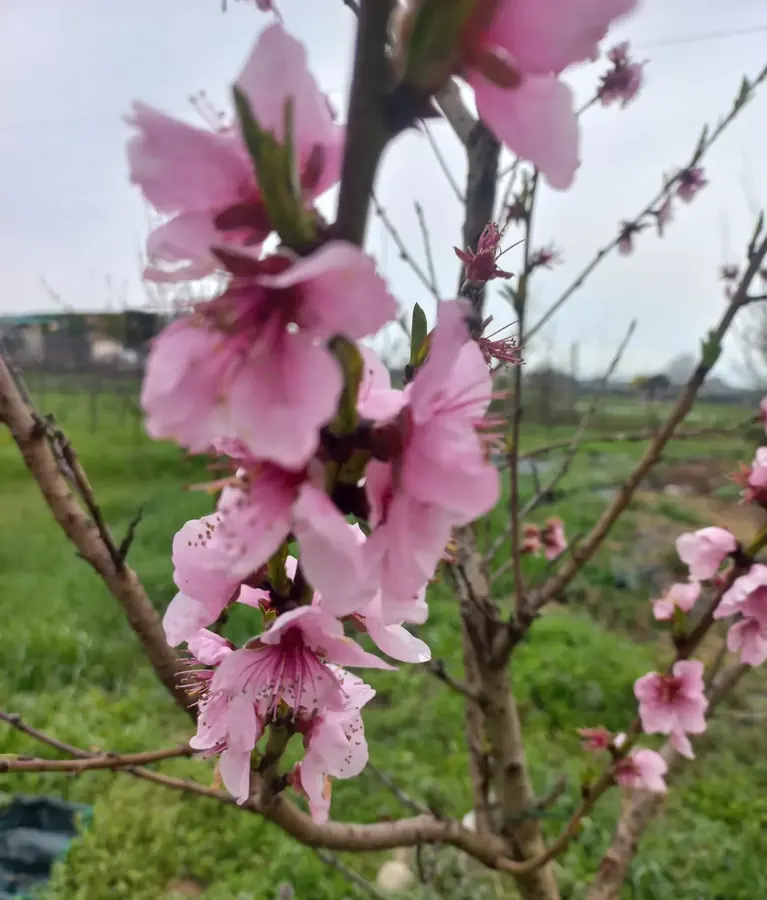
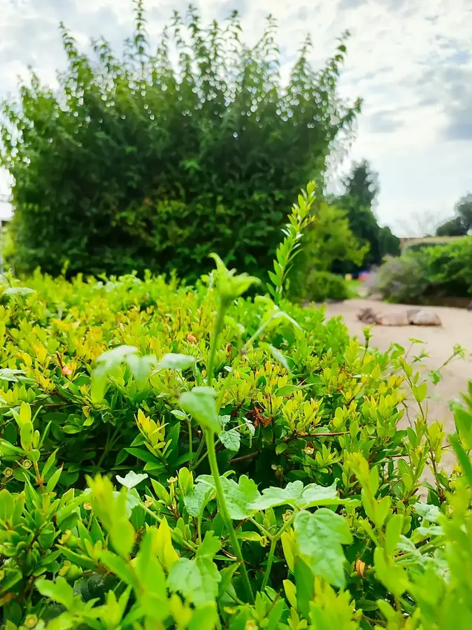
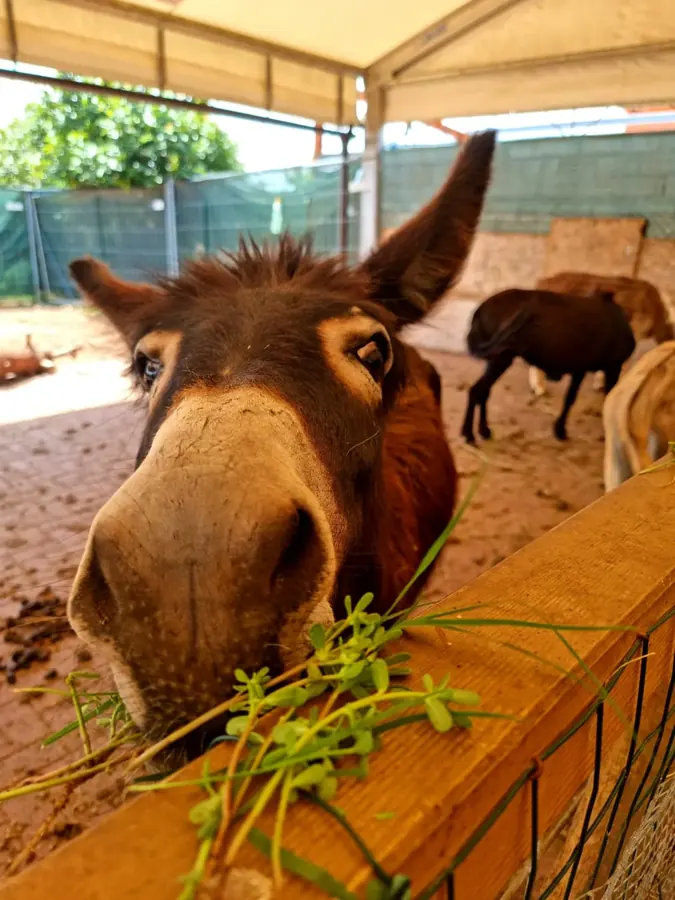
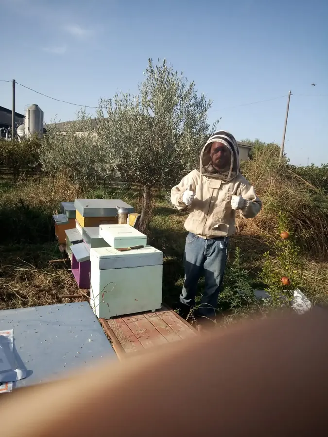
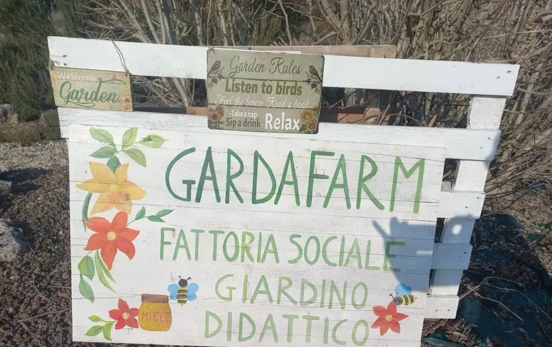
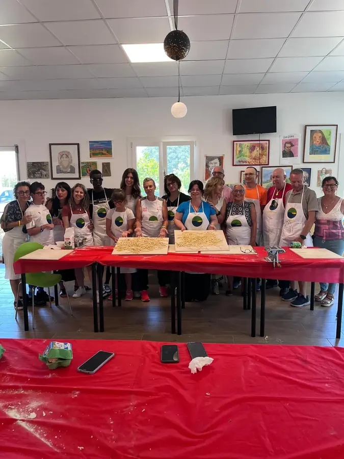

Chi siamo
storiaEnjoy nature,
dal 1988



La natura è parte della nostra storia
e della nostra anima
Nel 1988, dal profondo amore per il verde, è nata l'azienda florovivaistica Strambini Marco, dedicata alla realizzazione e alla cura di giardini e impianti di irrigazione. Da allora coltiviamo con passione piante e alberi, convinti che il benessere nasca anche dal contatto autentico con la natura.
Questa dedizione ci ha ispirato a creare Gardafarm: un luogo dove chiunque possa vivere il verde nella sua forma più genuina, scoprire le bellezze del territorio e riscoprire il piacere di stare bene grazie alla natura.
Enjoy nature: il benessere nasce dal contatto con la terra, gli alberi e gli animali.

Radici
contadine
Con radici profonde nella tradizione contadina, fin da piccoli abbiamo vissuto immersi nel verde, assaporandone la genuinità e i benefici. È proprio questo legame con la natura, con i suoi effetti positivi sul corpo e sulla mente, a ispirare la filosofia di Gardafarm.
Vogliamo condividere con chi ci visita la nostra visione: offrire relax, armonia e rigenerazione immersi nel verde, così come noi stessi li viviamo ogni giorno.
Imparare
dalla natura


Ospitare
Nel nostro agriturismo offriamo soggiorni rilassanti e rigeneranti, con spazi per vivere in modo autentico.



Educare
Nella fattoria didattica e sociale proponiamo percorsi per scuole, famiglie, gruppi e aziende.



Incontrarsi
Spazi per eventi e momenti di festa: a Gardafarm la natura è maestra, casa e occasione di incontro.